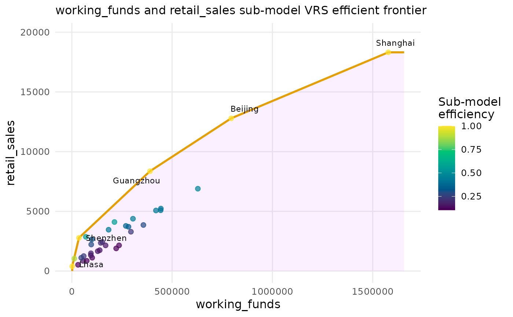
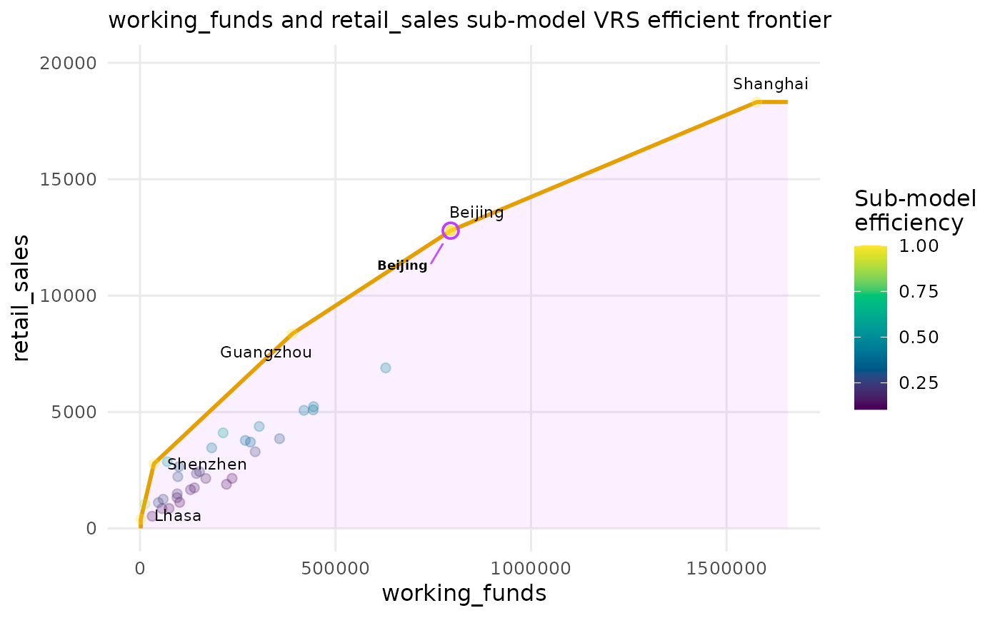

DEA efficient frontier for a single input/output pair
Source:R/plot-io-frontier.R
plot_io_frontier.RdDraws the classic two-dimensional DEA picture: the decision-making units in
input-by-output space, the production-possibility set shaded
beneath the frontier, and the efficient frontier itself for the chosen
returns-to-scale assumption. Optionally overlays the peer (reference) network
as arrows from each inefficient unit to its efficient targets.
Usage
plot_io_frontier(
x,
input,
output,
rts = c("crs", "vrs", "drs", "irs", "fdh"),
orientation = c("in", "out"),
peers_network = FALSE,
arrow_target = c("peer", "projection"),
point_size = 2,
transparency = 0.7,
fade = TRUE,
label_frontier = TRUE,
labels = "none",
max.overlaps.value = 10,
subtitle = NULL,
title = NULL,
interactive = FALSE,
...
)Arguments
- x
A
dea_dataobject, or data coercible byas_dea_data.- input, output
The single input and single output to plot, each given as a column name or as an integer position among the inputs/outputs.
- rts
Returns to scale for the frontier and efficiency scores:
"crs"(default),"vrs","drs","irs"or"fdh".- orientation
"in"(default) or"out"; affects the efficiency scores and the direction of projection arrows.- peers_network
Logical; if
TRUE, draw arrows from inefficient units to their efficient reference set. DefaultFALSE. With a single DMU named inlabels, only that unit's arrows are drawn; otherwise every inefficient unit's arrows are shown.- arrow_target
"peer"(default) draws an arrow to each efficient peer DMU, with opacity proportional to its envelopment weight (\(\lambda\));"projection"draws one arrow per inefficient unit to its projected point on the frontier (respectingorientation), at uniform opacity.- point_size
Point size. Default
2.- transparency
Base point/arrow alpha, a number in
[0, 1]. Default0.7.- fade
Focus control when a single DMU is given to
labels; seeplot_io_scatter. DefaultTRUE.- label_frontier
Logical; label the efficient (frontier) units. Default
TRUE.- labels
Labelling/focus mode:
"none"(default),"all","id","max.overlaps", or a single DMU name to highlight.- max.overlaps.value
Passed to ggrepel. Default
10.- subtitle
Plot subtitle.
NULL(default) shows “input and output sub-model RTS efficient frontier”; pass a string to override, orNAto suppress.- title
Plot title.
- interactive
If
TRUE, return a plotly object. DefaultFALSE.- ...
Passed to the point geom.
Details
The whole plot is a single, self-consistent two-variable DEA: the frontier,
the colour scale, and the peer arrows are all derived from
compute_efficiency() run on the chosen input/output pair
at the chosen rts. A unit's colour is therefore its efficiency in
this two-variable sub-model, which may differ from its efficiency in
the full multidimensional model – so a point sitting on the frontier line
reads as efficient, as it should.
References
Charnes, A., Cooper, W. W., & Rhodes, E. (1978). Measuring the efficiency of decision making units. European Journal of Operational Research, 2(6), 429–444. doi:10.1016/0377-2217(78)90138-8
Examples
d <- dea_data(
chinese_cities,
inputs = c("industrial_labour_force", "working_funds", "investments"),
outputs = c("gross_industrial_output", "profit_and_tax", "retail_sales"),
id = "DMU"
)
plot_io_frontier(d, input = "working_funds", output = "retail_sales",
rts = "vrs")

# peer network for one city, arrows weighted by lambda
plot_io_frontier(d, input = "working_funds", output = "retail_sales",
rts = "vrs", peers_network = TRUE, labels = "Beijing")
